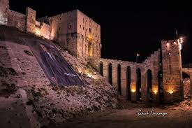

محافظه حلب
: تفاصيل عن محافظه حلب
محافظة حلب هي أعلى المحافظات السورية من حيث عدد السكان، تقع في شمال سوريا ومركزها مدينة حلب. تقسم محافظة حلب بحسب التقسيم الإداري إلى تسع مناطق .
تعد حلب أهم مركز صناعي في سوريا إضافة إلى أهميتها التجارية والزراعية. وتعد مدينة حلب من أقدم وأشهر مدن العالم وهي معروفة وشهيرة منذ القدم بصناعاتها التقليدية.
